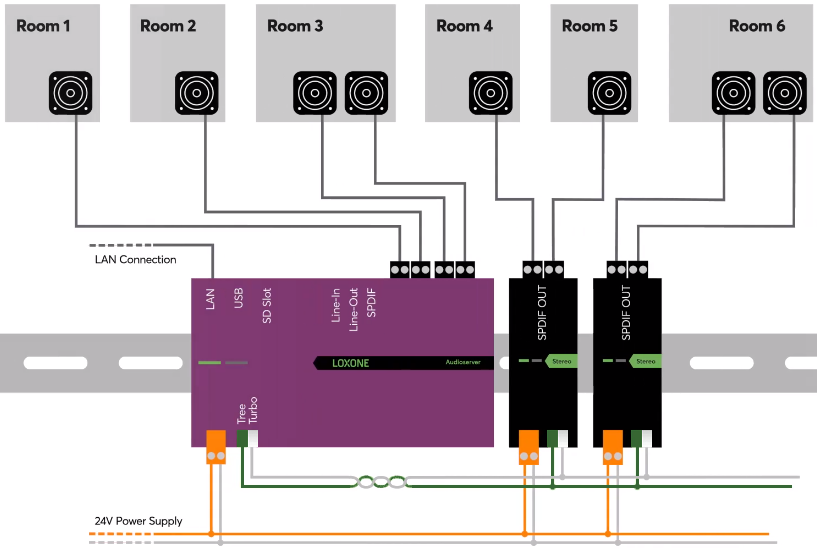

Je suis actuellement étudiant en BTS Services Informatiques aux Organisations (SIO), spécialité SISR (Solutions d’Infrastructure, Systèmes et Réseaux).
Passionné par les nouvelles technologies et le développement de compétences en administration réseau, j’ai déjà acquis des bases solides dans
des domaines tels que la gestion de systèmes, les protocoles réseau (DHCP, DNS) et l’administration Linux et Windows.
Mon objectif est de continuer à développer mes compétences techniques pour évoluer dans des environnements IT dynamiques,
tout en explorant les opportunités de programmation pour combiner mes intérêts.
Je suis motivé, curieux, et toujours à la recherche de nouveaux défis technologiques pour apprendre et m’améliorer.

Projet développé pendant mon année de terminale bac pro SN.
Installation et configuration d'un serveur audio Loxone permettant la gestion centralisée de plusieurs zones musicales.
J’ai installé ce serveur sur une machine virtuelle sous Debian, puis j’ai configuré les zones, les playlists et les périphériques compatibles.
J’ai également documenté toutes les étapes du projet, afin d’en faciliter la prise en main par un autre technicien.
Connecté à un système domotique Loxone, il peut lire des fichiers audio locaux, des radios Internet ou des services de streaming en ligne,
chaque zone est contrôlable individuellement grâce à une application mobile ou des interfaces Loxone Touch.
Intégration de scénarios domotiques (musique le matin, arrêt si pièce vide) et programmation des automatismes.
Projet développé pendant ma première année de BTS SIO.
Développement d'une application Python CLI pour gérer un annuaire de contacts :
- Ajout, modification, suppression de contacts
- Recherche par nom ou tag
- Export et import au format CSV/JSON
Utilisation de modules standards (csv, json) et gestion d’interface en ligne de commande.